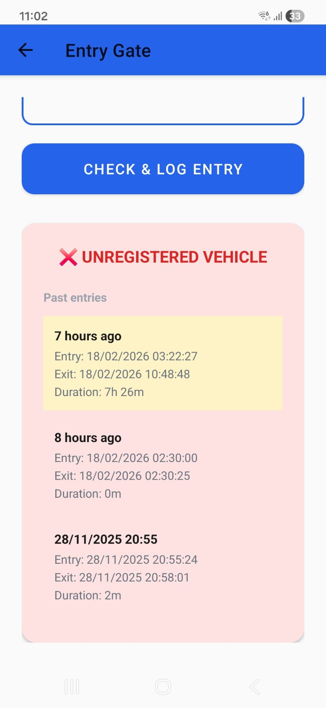
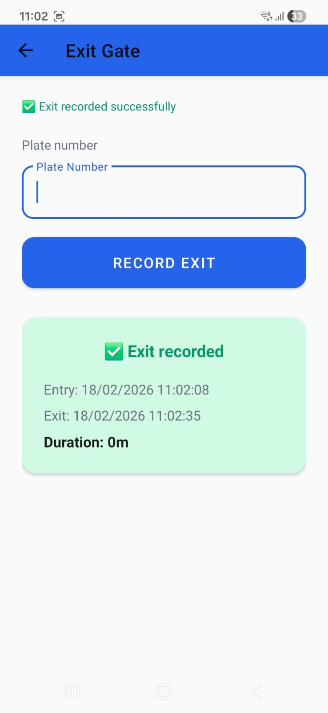

A system for security guards at campus gates to track vehicle entries and exits. The app checks if vehicles are registered, logs entry and exit times, and flags suspicious activity (e.g. unregistered vehicles entering often, or vehicles staying too long).
The system has four main parts:
Security guard types the vehicle plate number. The app checks if the vehicle is registered, runs suspicious-activity rules (e.g. unregistered vehicle entering 2+ times in 20 minutes), shows the past 3 entries, and logs the entry to Firestore.
FirebaseService.isVehicleRegistered(), checkSuspiciousFrequency(), getPastEntries(), logEntry()When a vehicle leaves, the guard enters the plate. The app finds the matching open entry (no exit time yet), updates it with exit time and duration. If the stay was over 20 minutes, it flags the entry as suspicious.
FirebaseService.findActiveEntry() — queries entryLogs where exitTime is null, then updates documentPassword-protected screen for admins. Add or delete vehicles (plate, owner, type). View all entry/exit logs (latest 100). Suspicious entries are highlighted. Includes change-password flow.
FirebaseService.addVehicle(), deleteVehicle(), getAllEntryLogs(100)Firebase Firestore is the backend. The app (Entry, Exit, Admin) talks directly to Firestore — no separate server. Stores vehicles and entry logs, syncs in real time, works offline with cached data.
vehicles (plateNumber, ownerName, vehicleType), entryLogs (plateNumber, entryTime, exitTime, durationMinutes, isSuspicious)Optional: There is a Python FastAPI + SQLite API in the project for migration or local testing — the app does not use it.